Quickstart
In this vignette we will show how to get started with
mlr3torch by training a simple neural network on a tabular
regression problem. We assume that you are familiar with the
mlr3 framework, see e.g. the mlr3 book. As a first example,
we will train a simple multi-layer perceptron (MLP) on the well-known
“mtcars” task, where the goal is to predict the miles per galleon
(‘mpg’) of cars. This architecture comes as a predfined learner with
mlr3torch, but you can also easily create new network
architectures, see the Neural Networks as Graphs vignette for a
detailed introduoduion. We first set a seed for reproducibility, load
the library and construct the task.
set.seed(314)
library(mlr3torch)
task = tsk("mtcars")
task$head()
#> mpg am carb cyl disp drat gear hp qsec vs wt
#> <num> <num> <num> <num> <num> <num> <num> <num> <num> <num> <num>
#> 1: 21.0 1 4 6 160 3.90 4 110 16.46 0 2.620
#> 2: 21.0 1 4 6 160 3.90 4 110 17.02 0 2.875
#> 3: 22.8 1 1 4 108 3.85 4 93 18.61 1 2.320
#> 4: 21.4 0 1 6 258 3.08 3 110 19.44 1 3.215
#> 5: 18.7 0 2 8 360 3.15 3 175 17.02 0 3.440
#> 6: 18.1 0 1 6 225 2.76 3 105 20.22 1 3.460Learners in mlr3torch work very similary to other
mlr3 learners. Below, we construct a simple multi layer
perceptron for regression. We do this as usual by calling
lrn() and configuring the parameters: We use two hidden
layers with 50 neurons, For training, we set the batch size to 32, the
number of training epochs to 30 and the device to "cpu".
For a complete description of the available parameters see
?mlr3torch::LearnerTorchMLP.
mlp = lrn("regr.mlp",
# architecture parameters
neurons = c(50, 50),
# training arguments
batch_size = 32, epochs = 30, device = "cpu"
)
mlp
#> <LearnerTorchMLP[regr]:regr.mlp>: My Little Powny
#> * Model: -
#> * Parameters: epochs=30, device=cpu, num_threads=1,
#> num_interop_threads=1, seed=random, eval_freq=1,
#> measures_train=<list>, measures_valid=<list>, patience=0,
#> min_delta=0, batch_size=32, neurons=50,50, p=0.5,
#> activation=<nn_relu>, activation_args=<list>
#> * Validate: NULL
#> * Packages: mlr3, mlr3torch, torch
#> * Predict Types: [response]
#> * Feature Types: integer, numeric, lazy_tensor
#> * Properties: internal_tuning, marshal, validation
#> * Optimizer: adam
#> * Loss: mse
#> * Callbacks: -We can use this learner for training and prediction just like any other regression learner. Below, we split the observations into a training and test set, train the learner on the training set and create predictions for the test set. Finally, we compute the mean squared error of the predictions.
# Split the obersevations into training and test set
splits = partition(task)
# Train the learner on the train set
mlp$train(task, row_ids = splits$train)
# Predict the test set
prediction = mlp$predict(task, row_ids = splits$test)
# Compute the mse
prediction$score(msr("regr.mse"))
#> regr.mse
#> 283.838Configuring a Learner
Although torch learners are quite like other mlr3
learners, there are some differences. One is that all
LearnerTorch classes have construction arguments,
i.e. torch learners are more modular than other learners. While learners
are free to implement their own construction arguments, there are some
that are common to all torch learners, namely the loss,
optimizer and callbacks. Each of these object
can have their own parameters that are included in the
LearnerTorch’s parameter set.
In the previous example, we did not specify any of these explicitly
and used the default values, which was the Adam optimizer, MSE as the
loss and no callbacks. We will now show how to configure these three
aspects of a learner through the mlr3torch::TorchOptimizer,
mlr3torch::TorchLoss, and
mlr3torch::TorchCallback classes.
Loss
The loss function, also known as the objective function or cost
function, measures the discrepancy between the predicted output and the
true output. It quantifies how well the model is performing during
training. The R package torch, which underpins the
mlr3torch framework, already provides a number of
predefined loss functions such as the Mean Squared Error
(nn_mse_loss), the Mean Absolute Error
(nn_l1_loss), or the cross entropy loss
(nn_cross_entropy_loss). In mlr3torch, we
represent loss functions using the mlr3torch::TorchLoss
class. It provides a thin wrapper around the torch loss functions and
annotates them with meta information, most importantly a
paradox::ParamSet that allows to configure the loss
function. Such an object can be constructed using
t_loss(<key>). Below, we construct the L1 loss
function, which is also known as Mean Absolute Error (MAE). The printed
output below informs us about the wrapped loss function
(nn_l1_loss), the configured parameters, the packages it
depends on and for which task types it can be used.
l1 = t_loss("l1")
l1
#> <TorchLoss:l1> Absolute Error
#> * Generator: nn_l1_loss
#> * Parameters: list()
#> * Packages: torch,mlr3torch
#> * Task Types: regrIts ParamSet contains only one parameter, namely
reduction, which specifies how the loss is reduced over the
batch.
# the paradox::ParamSet of the loss
l1$param_set
#> <ParamSet(1)>
#> id class lower upper nlevels default value
#> <char> <char> <num> <num> <num> <list> <list>
#> 1: reduction ParamFct NA NA 2 mean [NULL]The wrapped loss module generator is accessible through the slot
$generator.
l1$generator
#> <nn_l1_loss> object generator
#> Inherits from: <inherit>
#> Public:
#> .classes: nn_l1_loss nn_loss nn_module
#> initialize: function (reduction = "mean")
#> forward: function (input, target)
#> clone: function (deep = FALSE, ..., replace_values = TRUE)
#> Private:
#> .__clone_r6__: function (deep = FALSE)
#> Parent env: <environment: 0x55565281ed48>
#> Locked objects: FALSE
#> Locked class: FALSE
#> Portable: TRUEWe can pass the TorchLoss as the argument
loss during initialization of the learner. The parameters
of the loss are added to the learner’s ParamSet, prefixed
with "loss.".
mlp_l1 = lrn("regr.mlp", loss = l1)
mlp_l1$param_set$values$loss.reduction
#> NULLAll predefined loss functions are stored in the
mlr3torch_losses dictionary, from which they can be
retrieved using t_loss(<key>).
mlr3torch_losses
#> <DictionaryMlr3torchLosses> with 3 stored values
#> Keys: cross_entropy, l1, mseOptimizer
The optimizer determines how the model’s weights are updated based on
the calculated loss. It adjusts the parameters of the model to minimize
the loss function, optimizing the model’s performance. Optimizers work
analogous to loss functions, i.e. mlr3torch provides a thin
wrapper – the TorchOptimizer class – around the optimizers
such as Adam (optim_adam) or SGD (optim_sgd).
TorchLoss objects can be constructed using
t_opt(<key>). For optimizers, the associated
ParamSet is more interesting as we see below:
sgd = t_opt("sgd")
sgd
#> <TorchOptimizer:sgd> Stochastic Gradient Descent
#> * Generator: optim_sgd
#> * Parameters: list()
#> * Packages: torch,mlr3torch
sgd$param_set
#> <ParamSet(5)>
#> id class lower upper nlevels default value
#> <char> <char> <num> <num> <num> <list> <list>
#> 1: lr ParamDbl 0 Inf Inf <NoDefault[0]> [NULL]
#> 2: momentum ParamDbl 0 1 Inf 0 [NULL]
#> 3: dampening ParamDbl 0 1 Inf 0 [NULL]
#> 4: weight_decay ParamDbl 0 1 Inf 0 [NULL]
#> 5: nesterov ParamLgl NA NA 2 FALSE [NULL]The wrapped torch optimizer can be accessed through the slot
generator.
Parameters of TorchOptimizer (but also
TorchLoss and TorchCallback) can be set in the
usual mlr3 way, i.e. either during construction, or
afterwards using the $set_values() method of the parameter
set.
sgd$param_set$set_values(
lr = 0.5, # increase learning rate
nesterov = FALSE # no nesterov momentum
)Below we see that the optimizer’s parameters are added to the
learner’s ParamSet (prefixed with "opt.") and
that the values are set to the values we specified.
mlp_sgd = lrn("regr.mlp", optimizer = sgd)
as.data.table(mlp_sgd$param_set)[
startsWith(id, "opt.")][[1L]]
#> [1] "opt.lr" "opt.momentum" "opt.dampening" "opt.weight_decay"
#> [5] "opt.nesterov"
mlp_sgd$param_set$values[c("opt.lr", "opt.nesterov")]
#> $opt.lr
#> [1] 0.5
#>
#> $opt.nesterov
#> [1] FALSEBy exposing the optimizer’s parameters, they can be conveniently
tuned using mlr3tuning.
All available optimizers are stored in the
mlr3torch_optimizers dictionary.
mlr3torch_optimizers
#> <DictionaryMlr3torchOptimizers> with 7 stored values
#> Keys: adadelta, adagrad, adam, asgd, rmsprop, rprop, sgdCallbacks
The third important configuration option are callbacks which allow to
customize the training process. This allows saving model checkpoints,
logging metrics, or implementing custom functionality for specific
training scenarios. For a tutorial on how to implement a custom
callback, see the Custom Callbacks vignette. Here, we will only
show how to use predefined callbacks. Below, we retrieve the
"history" callback using t_clbk(), which has
no parameters and merely saves the training and validation history in
the learner so it can be accessed afterwards.
history = t_clbk("history")
history
#> <TorchCallback:history> History
#> * Generator: CallbackSetHistory
#> * Parameters: list()
#> * Packages: mlr3torch,torchIf we wanted to learn about what the callback does, we can access the
help page of the wrapped object using the $help() method.
Note that this is also possible for the loss and optimizer.
history$help()All predefined callbacks are stored in the
mlr3torch_callbacks dictionary.
mlr3torch_callbacks
#> <DictionaryMlr3torchCallbacks> with 4 stored values
#> Keys: checkpoint, history, progress, tbPutting it Together
We now define our customized MLP learner using the loss, optimizer
and callback we have just covered. To keep track of the performance, we
use 30% of the training data for validation and evaluate it using the
MAE Measure. Note that the mearures_valid and
measures_train parameters of LearnerTorch take
common mlr3::Measures, whereas the loss function must be a
TorchLoss.
mlp_custom = lrn("regr.mlp",
# construction arguments
optimizer = sgd, loss = l1, callbacks = history,
# scores to keep track of
measures_valid = msr("regr.mae"),
# other parameters are left as-is:
# architecture
neurons = c(50, 50),
# training arguments
batch_size = 32, epochs = 30, device = "cpu",
# validation proportion
validate = 0.3
)
mlp_custom
#> <LearnerTorchMLP[regr]:regr.mlp>: My Little Powny
#> * Model: -
#> * Parameters: epochs=30, device=cpu, num_threads=1,
#> num_interop_threads=1, seed=random, eval_freq=1,
#> measures_train=<list>, measures_valid=<MeasureRegrSimple>,
#> patience=0, min_delta=0, batch_size=32, neurons=50,50, p=0.5,
#> activation=<nn_relu>, activation_args=<list>, opt.lr=0.5,
#> opt.nesterov=FALSE
#> * Validate: 0.3
#> * Packages: mlr3, mlr3torch, torch
#> * Predict Types: [response]
#> * Feature Types: integer, numeric, lazy_tensor
#> * Properties: internal_tuning, marshal, validation
#> * Optimizer: sgd
#> * Loss: l1
#> * Callbacks: historyWe now train the learner on the “mtcars” task again and use the same train-test split as before.
mlp_custom$train(task, row_ids = splits$train)
prediction_custom = mlp_custom$predict(task, row_ids = splits$test)Below we make predictions on the unseen test data and compare the
scores. Because we directly optimized the L1 (aka MAE) loss and tweaked
the learning rate, our configured mlp_custom learner has a
lower MAE than the default mlp learner.
prediction_custom$score(msr("regr.mae"))
#> regr.mae
#> 7.122375
prediction$score(msr("regr.mae"))
#> regr.mae
#> 15.27983Because we configured the learner to use the history callback, we can
find the validation history in its $model slot:
head(mlp_custom$model$callbacks$history$valid)
#> epoch regr.mae
#> <num> <num>
#> 1: 1 1.777395e+04
#> 2: 2 3.955504e+08
#> 3: 3 1.143863e+04
#> 4: 4 1.792927e+01
#> 5: 5 1.759594e+01
#> 6: 6 1.726260e+01The plot below shows it for the epochs 6 to 30.

Other important information that is stored in the
Learner’s model is the $network, which is the
underlying nn_module. For a full description of the model,
see ?LearnerTorch.